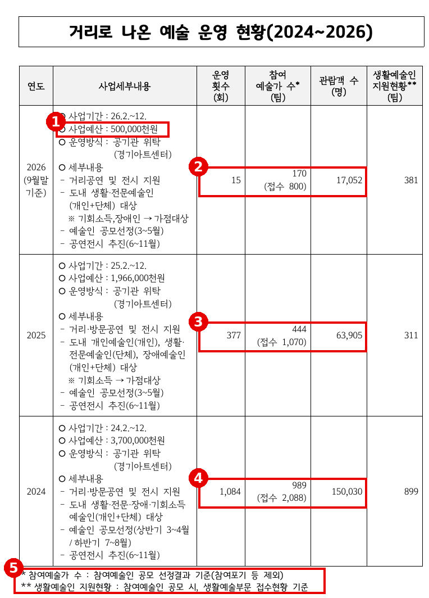
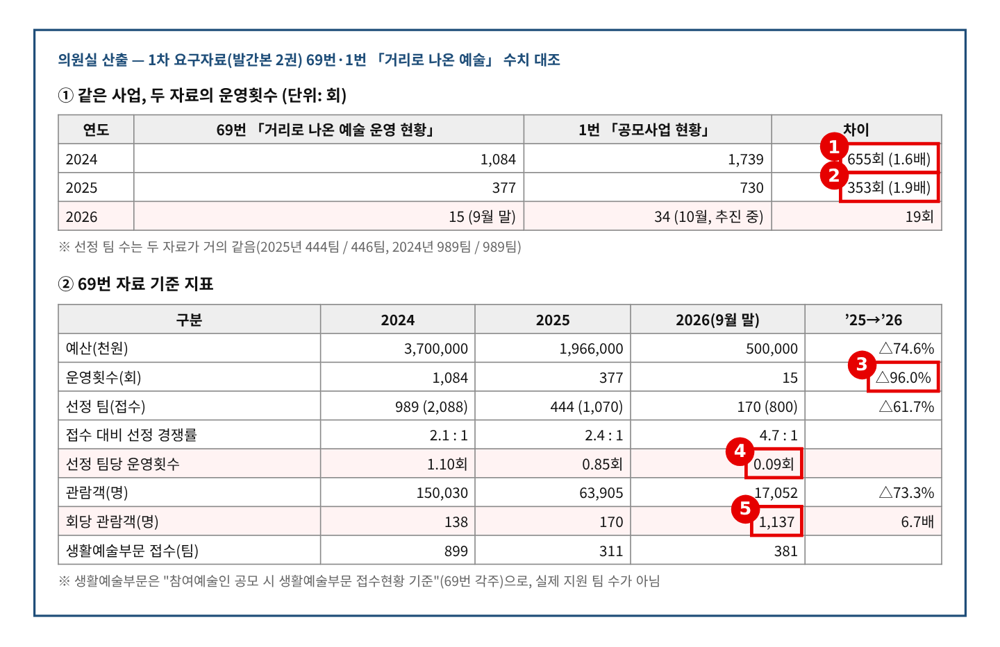
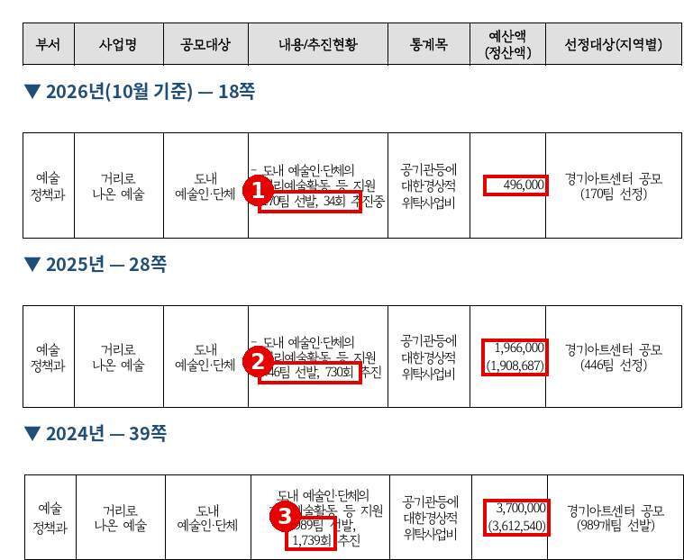
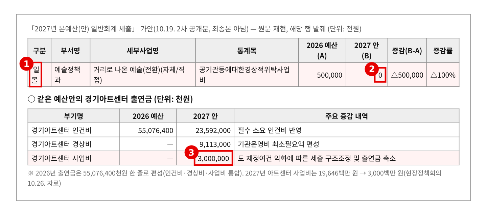

2026년 행정사무감사 질의서 (발언용 · 5분) — 기관 1일차
거리로 나온 예술, 170팀 뽑고 무대는 15번
— 예산 75%·공연 96% 축소, 실적은 자료마다 다르고 내년엔 0원
문화체육관광위원회 황은화 위원 → 경기아트센터 사장(수탁기관)
| ① 뽑아 놓고 무대가 없다 | 2026년 800팀 접수, 170팀 선정. 9월 말까지 무대는 15회 — 선정 팀당 0.09회 → 예산 19.66억 → 5억(△75%), 공연 377회 → 15회(△96%). 생활예술부문 접수만 381팀 |
| ② 실적이 자료마다 다르다 | 같은 사업 운영횟수: 2025년 377회(69번) vs 730회(1번), 2024년 1,084회 vs 1,739회 → 회당 관람객 2025년 170명 → 2026년 1,137명(6.7배) — 산정 기준이 무엇인가 |
| ③ 2027년, 0원 | 2027 예산안(가안) 「거리로 나온 예술」 500,000천원 → 0원(일몰) → 아트센터 사업비도 196억 → 30억. 생활예술인 무대 대책이 없다 |
※ 의원실 메모 (발언 제외) · 69번은 이오수·김승기·안시현·이지혜·전예슬 위원과 공동 요구, 1번(공모사업)은 10명 공동 요구 자료다. "왜 줄였나"는 앞 순서에서 나올 가능성이 크다. 이 질의는 선정 팀의 무대 배정, 실적 숫자의 정합성, 내년 공백 대책으로 좁힌다. · 20번(공동주택 문화예술, 이오수 위원 등)에 이 사업의 아파트 공연 목록이 있다. 공동주택 중복 문제는 다루지 않는다. · 2026년 15회(9월 말, 69번)와 34회(10월, 1번)는 기준일이 달라 차이가 날 수 있다. 단정하지 말고, 핵심 증거는 기준일이 같은 2024·2025년 차이로 삼는다. · 예산 편성은 예술정책과 소관이다. 사장에게는 수탁기관으로서의 운영·실적·의견을 묻는다. 2027년 예산은 10.19. 공개 가안 기준이다. |
※ 발언 중 [근거 n] 표시는 맨 뒤 「근거자료」 번호입니다.
■ 발언 — 도입
사장님, 경기도가 아트센터에 맡긴 「거리로 나온 예술」에 대해 묻겠습니다.
도내 생활예술인과 전문예술인이 거리와 마을에서 공연하고 전시하도록 돕는 사업입니다. 예술인에게는 무대이고, 도민에게는 일상 속 공연입니다. 아트센터가 위탁받아 공모하고, 무대를 배정합니다. [근거 1]
올해 이 사업에서 무슨 일이 있었는지, 세 가지를 확인하겠습니다.
▶ 질문 1. 뽑아 놓고 무대가 없습니다
예산은 2024년 37억 원, 2025년 19억 6,600만 원, 올해 5억 원입니다. 1년 만에 75%가 줄었습니다. 공연은 377회에서 15회, 96%가 줄었습니다. [근거 1] [근거 2]
그런데 공모는 했습니다. 올해 800팀이 접수했고, 170팀을 뽑았습니다. 경쟁률 4.7대 1입니다. 9월 말까지 무대는 15번입니다. 선정된 팀 하나당 0.09회입니다. 열 팀 중 아홉 팀은 뽑히고도 무대에 서지 못한 셈입니다. [근거 1] [근거 2]
접수한 800팀 중 생활예술부문이 381팀입니다. 동호회, 마을 공연팀입니다. 이분들에게 이 사업은 거의 유일한 공공 무대입니다. [근거 1]
사장님, 선정된 170팀 가운데 실제로 무대에 선 팀은 몇 팀입니까? 나머지 팀은 언제 무대에 섭니까?
▷ "10월까지 34회를 했고, 11월까지 순차 진행 중이다"
→ 그래도 170팀에 34회입니다. 공모 공고에서 팀당 몇 회 공연을 약속했습니까? 선정 팀별 배정 현황, 회차·일자·장소를 감사 기간 안에 제출해 주십시오. [근거 3]
▷ "올해는 한 회에 여러 팀이 서는 행사형으로 운영했다"
→ 그렇다면 회당 몇 팀이 섰고, 팀당 출연료는 얼마입니까? 운영 방식이 바뀌었다면 공모 때 알렸는지도 확인해 주십시오. 예술인은 무대 횟수를 보고 지원합니다.
▶ 질문 2. 같은 사업, 실적이 자료마다 다릅니다
이번 감사에 낸 두 자료를 나란히 놓았습니다. 사업별 운영 현황(69번)은 2025년 377회입니다. 공모사업 현황(1번)은 같은 해 730회입니다. 2024년도 1,084회와 1,739회로 다릅니다. [근거 1] [근거 3]
선정 팀 수는 444팀과 446팀, 989팀과 989팀으로 거의 같습니다. 그런데 운영횟수만 두 배 가까이 차이가 납니다. [근거 2]
관람객도 보겠습니다. 2025년 회당 170명이던 관람객이 올해는 회당 1,137명입니다. 6.7배입니다. 거리 공연 한 번에 천 명 넘게 모였다는 뜻입니다. [근거 2]
실적은 다음 해 예산의 근거입니다. 올해 감액도 이 숫자를 보고 판단했을 것입니다.
사장님, 어느 숫자가 맞습니까? 운영횟수와 관람객은 무엇을 기준으로 셉니까?
▷ "1번 자료는 공연과 전시 회차를 세부 단위로 센 것이다"
→ 그렇다면 같은 사업에 기준이 둘입니다. 도에 낸 위탁사업 정산서와 성과보고서에는 어느 숫자를 썼습니까? 두 자료를 맞춘 정정자료와 산정 기준을 내 주십시오. [근거 2]
▷ "관람객은 행사장 전체 방문객을 집계했다"
→ 공연 관람객과 행사장 방문객은 다릅니다. 계수기로 셌는지, 추정했는지 집계 방법을 밝혀 주십시오. 부풀려진 실적으로는 이 사업을 지킬 수 없습니다.
▶ 질문 3. 내년에는 0원입니다
2027년 예산안 가안을 보면 「거리로 나온 예술」은 5억 원에서 0원, 일몰입니다. 아트센터 출연금 사업비도 196억 원에서 30억 원으로 줄어듭니다. [근거 4]
올해 800팀이 지원했습니다. 기회소득 예술인과 장애예술인에게 가점까지 주며 모은 예술인들입니다. 내년에는 공모조차 없습니다. [근거 1] [근거 4]
사장님, 올해 지원한 800팀의 내년 무대는 어디에 있습니까? 일몰 협의 과정에서 아트센터는 도에 어떤 의견을 냈습니까?
▷ "예산은 도가 결정하는 사항이다"
→ 수탁기관은 현장을 가장 잘 압니다. 성과와 수요를 근거로 의견을 낼 수 있고, 내야 합니다. 협의 과정에서 낸 의견이 있다면 제출해 주십시오. 줄이더라도 실적이 정확해야 다시 살릴 근거가 됩니다.
▷ "아트센터 자체 찾아가는 공연 등에서 예술인 무대를 이어가겠다"
→ 그 사업들도 내년 사업비 30억 원 안에 있습니다. 찾아가는 공연은 공모로 뽑은 전문단체 26곳이 섭니다. 생활예술인이 설 자리는 어디입니까? 몇 팀, 몇 회인지 숫자로 답해 주십시오. [근거 4]
■ 마무리 · 요구사항
사장님, 이 사업은 예술인에게 무대를 주겠다는 약속입니다. 올해 170팀을 뽑았지만 무대는 15번이었습니다. 실적은 자료마다 다르고, 내년에는 사업이 사라집니다. 줄이는 것보다 더 큰 문제는 약속을 지키지 못하는 것입니다. 남은 기간이라도 꼼꼼히 챙겨 주십시오.
하나, 2026년 선정 170팀의 공연 배정 현황(팀별 회차·일자·장소·출연료)과 무대에 서지 못한 팀에 대한 연내 배정 계획을 감사 종료 전까지 제출해 주십시오.
둘, 2024~2026년 운영횟수·관람객 산정 기준과 69번·1번 자료를 맞춘 정정자료를 감사 종료 전까지 제출하고, 위탁사업 실적 산정 기준을 하나로 정해 2027년 2월까지 보고해 주십시오.
셋, 2027년 일몰에 따른 생활예술인 무대 공백 대책(아트센터 자체 사업 연계 규모, 시군 문화재단 연계 등)과 일몰 협의 때 도에 낸 의견을 2027년 본예산 상임위 심사 전까지 보고해 주십시오.
■ 참고 · 감사 중 추가 요구자료
· 2026년 「거리로 나온 예술」 공모 공고문(팀당 공연 횟수·출연료·운영 방식)
· 2026년 선정 170팀 팀별 공연 배정 현황과 참여 포기 팀 현황
· 2024~2026년 회차별 관람객 집계 방식(계수·추정 구분)과 회차별 관람객 수
· 2024·2025년 위탁사업 정산서·성과보고서(도 제출본)
· 2027년 일몰 관련 도-아트센터 협의 공문
근 거 자 료
빨간 상자·번호는 발언에서 짚는 부분입니다. 발간본은 원문 캡처이고, "원문 재현"은 엑셀 원문을 그대로 옮긴 것이며, "의원실 산출"은 원자료로 계산한 값입니다.
▶ 질문 1 관련
근거 1. 거리로 나온 예술 운영 현황(2024~2026) 
※ 출처: 문화체육관광국 행정사무감사 1차 요구자료(발간본 2권) 69번 「거리로 나온 예술 최근 3년 운영 현황」(예술정책과) 531쪽 |
근거 2. 두 자료 대조 · 선정 팀당 공연횟수 · 회당 관람객 
※ 출처: 의원실 산출 — 문화체육관광국 행정사무감사 1차 요구자료(발간본 2권) 69번 「거리로 나온 예술 최근 3년 운영 현황」(예술정책과) 531쪽, 같은 발간본 1번 「2026년까지 최근 3년간 공모사업 현황」 18·28·39쪽 |
▶ 질문 2 관련
근거 3. 공모사업 현황(1번)의 「거리로 나온 예술」 — 연도별 
※ 출처: 문화체육관광국 행정사무감사 1차 요구자료(발간본 2권) 1번 「2026년까지 최근 3년간 공모사업 현황(지역별 구분)」(문화정책과 취합) 18·28·39쪽 (해당 행 발췌, 표 머리는 28쪽) |
▶ 질문 3 관련
근거 4. 2027년 본예산(안) — 거리로 나온 예술 일몰, 아트센터 사업비 30억 
※ 출처: 「2027년 본예산(안) 일반회계 세출」 가안(10.19. 2차 공개분, 최종본 아님), 2026.10.26. 현장정책회의 「문화체육관광국 2027년 본예산안」 81쪽 (원문 재현, 발췌) |